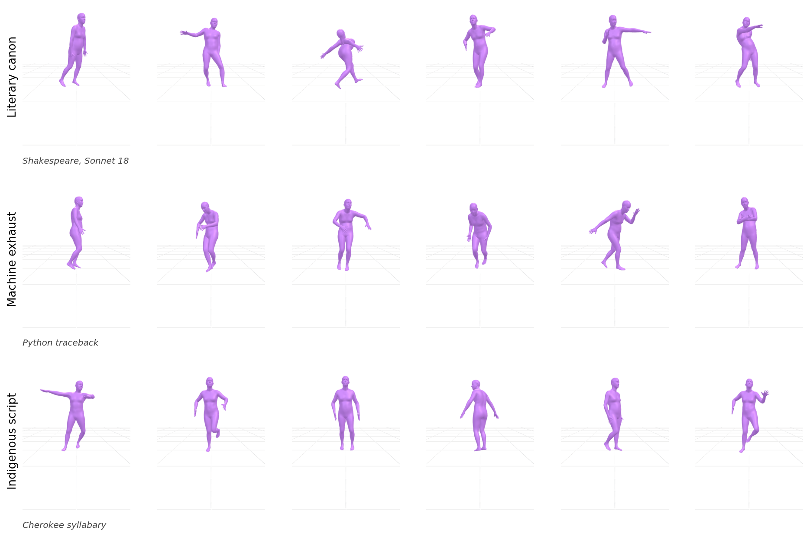

Paper
The Choreographic Genome: Amplifying the Silent Structure of Text into Dance
Recent advances in generative artificial intelligence have enabled the synthesis of complex human motion with unprecedented fidelity. However, current text-to-motion systems rely strictly on linguistic semantics: if an input reads "I put my hands up", the model searches for a pose with raised hands, and every non-semantic property of the text is discarded as noise. In this work, we treat that discarded structure as the signal. We present an embodied visualization instrument that amplifies not what a text means, but how it is built. Our method first quantizes dance kinematics into a motion codebook of 256 stylistic "regions" using Principal Component Analysis and K-Means clustering, and orders those regions along the dominant axis of movement. We then map the raw byte representation of any input text directly onto this codebook, producing a deterministic sequence of regions that we call the text's "choreographic genome". A precomputed plausibility graph and a set of physics smoothing routines turn this genome into fluid, full-body movement, so that the dancing body becomes a display surface for the byte-level structure that semantic systems ignore. Through a series of artistic case studies, including a Shakespeare sonnet, a machine error log, source code, an abolitionist's question, and Indigenous and Devanagari scripts, we show that each text produces a visibly distinct dance, and that scripts marginalized by ASCII-centric computing are amplified into close to three times as much movement per character. We frame this not as a motion-synthesis benchmark, but as a critical and poetic visualization that asks what we choose to count as signal, and what we allow to go unheard.
